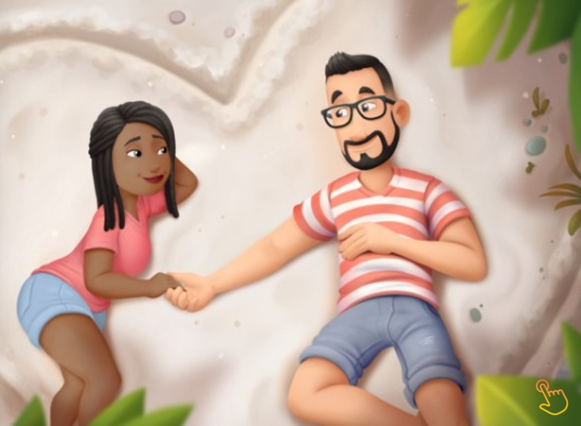

Diversos motivo porque eu te amo
Assim como a praia encontra o mar e o amanhecer termina a escuridão você me completa, Faisca, e ilumina meu coração. Somos retas paralelas desejando a mesma meta, entrelaçadas pela vida: duas metades de uma só peça. Eu espelho seus sonhos, nossos desejos se alinham. Você me lapida, mãos coladas nas minhas. Nossos coações ecoam em sontinoa, uma prquestra secreta: Eu te amo, Talita, porque você me completa.
As vezes quando estou só, minha mente se aclara. Com tudo o que eu já fiz e com o que o futuro ainda prepara. Confio e acredito no propósitoa me guiar por todos os caminhos em que deixo essa luz iluminar.
Sei que a minha alma, pois todas as incertezas ela atenua, mas proincipalmente, Talita, porque ela me trouixe até a sua. Você é minha alma gêmea, Faísca. Não conheço mais a soluidão quando estou ao sei lado. Eu te amei desde sempre, pois a luz irradiou em meu coração.
No centro de São Paulo, um casal compartilha um amor profundo. Enquanto ele prefere a simplicidade da vida, ela encontra beleza em cada detalhe, especialmente através de sua paixão por fotografar. Quando ela descobre um antigo troféu esquecido, vê não apenas um objeto, mas uma história visual para capturar, enquanto ele, mais reservado, aprende a apreciar a magia de sua perspectiva única sobre o mundo ao seu redor.
Tenho que manter a pegada, aconteça o que acontecer. Mesmo que você não entenda o mapa da vida e faça a gente se perder... Mas seja qual for a marcha entre montanhas, mares e obstáculos, Eu te amo Talita, aqui e em todos os lugares.
às vezes, seu senso de aventura é instintio e nossos corações seguem o trajeto alternativo. Esqueça o enredeço, o certo,a rota a percorrer: "Rodolfo chefou ao seu destino!" (Que, afirmo, é sempre bem onde você estár Talita)
Ação: Talita está brava! - Silência no Set
Mão na cintura, lábiosprensados, mandíbula travada. Eu te amo Faisca e você fica tão linda quando está irritada... Tudo bem fazer tempestade em um copo d'agua, essas birras até combina com você e tanterei não guardar mágoas. Estou sempre aqui para acalmá-la, aconteça o que acontecer! Adoro suas ceninhas, qinda que eu as provoque sem querer.
Sei que a minha alma, pois todas as incertezas ela atenua, mas proincipalmente, Talita, porque ela me trouixe até a sua. Você é minha alma gêmea, Faísca. Não conheço mais a soluidão quando estou ao sei lado. Eu te amei desde sempre, pois a luz irradiou em meu coração.
Apresentando o novo eprfume, rico em realidade
EAU DE TALITA - 50ml
Uma exclusividade para mim minha memória olfativa se aguça com sua fragrância deliciosa e eu te amo, Talita, porque você está sempre cheirosa. Tem notas de flores recém-colhidas - e um leve aroma de treino intensivo. Você é um lembrete e sensual do poder do amor instintivo. Exala um perfume divino que fica cada vez melhor com a idade. Então saiba, Faísca, que toda vez que você parte, meus setnidos ficam com muita saudade.
As vezes quando estou só, minha mente se aclara. Com tudo o que eu já fiz e com o que o futuro ainda prepara. Confio e acredito no propósitoa me guiar por todos os caminhos em que deixo essa lus iluminar.
Sei que a minha alma, pois todas as incertezas ela atenua, mas proincipalmente, Talita, porque ela me trouixe até a sua. Você é minha alma gêmea, Faísca. Não conheço mais a soluidão quando estou ao sei lado. Eu te amei desde sempre, pois a luz irradiou em meu coração.
Rodolfo: Você é doida!
Talita: Eu amo as suas ficção!
Rodolfo: Você até passa do limite, é evidente, mas é esse jeitinho que encanta minha mente. Faz sentido? Ou será que também perdi a cabeça? De qualquer forma, Faisca: eu gosto que você me enlouqueça. Já provou que lucidez é para os fracos. E see é seu toque especial: Nosso amor é fora da casinha! Sensacional
Talita: Você me deixa toda mole falando assim.
Um soco verbal, direto no queijo! Mas venho com um gancho capaz de tirar você dos eixoa. Estamos pau a pau trocando golpes COMO PROFISSIONAIS numa DISCUSSÃO que parece luta-livre, vale tudo e muito mais!
É natural brigar Talita, mas problemas a gente soluciona. Estamos no mesmo LADO DO RINGUE - não vamos à loucura. Eu te amo, Faísca porque vocÊ sabe como é o combate e encerra a luta com vários beijinhos que me LEVA AO NOCAUTE"
Não estou exagerando, não me leve a mal: Você é uma mestra das palavras, Faisca, E PONTO FINAL! Em dias ruins, você me aconcelha e me anima sem eprceber. EU TE AMO porque você sempre sabe o que dizer. Talita, suas ideias são mais que demais! E são tantas e TANTAS, parece que não acabam nunca mais... Er... quer dizer, não me canso de sua LINDA VOZ! Embora às vezes queira descansar de tanto blá-blá-blá e falação e beijinHos, no geral, seus argumentos merecem dos meus ouvidos TODA A ATENÇÃO!
Tenho certeza que a comida será ótimo. Precisaram reservar a mesa. E o serviço, uma beleza! Já terminei, se eu comer mais vou passar mal... Já que insiste, vou querer a sobremesa especial, e olha como você vai me deixar. Eu te amo Talita porque você é umachef de fato, sua comida é de lamber os beiços, os dedos e o rpato! Dou cinco estrala Talida. Não! VOCÊ MERECE DEZ! Ei, Faisca, minha barriga está começando a roncar outra vez....
Rodolfo parecebastante seguro e obstinado, mas, por dentro, guarda um lado ainda não revelado. Ele tem sonhos, manisas e medos bem escondidos que se acumulam com o tempo como paginas não lidas.
Até o dia em que encontra Talita, ela vê além do títlo. Os dois compartilham acertos e falhas e escrevem um novo capítulo: "Eu gosto da sua versão real", diz ela, "assim como você me mostrou". "Eu Te amo, Talita porque você me permite ser quem eu sou."
TE AMO MINHA RAINHA. THE END
Não acabou não. Se vcs acham que acabou, vocês estão por fora!! Isto é apenas o começo...
Estrelando com Talita, vem ai:
Do Trampo-Zilla e até do temível Leão! Você está sempre ao meu lado e me ajuda com qualquer problema, ninguém chega ao seus pés, nem na vida e nem no cinema.
Nenhum monstro foi ferido durante as gravações, exceto os mais irritantes: A participação do monstro da TPM está suheira àqueles dias do mês. A participação do Leão é cortesia da receita federal, esta é uma obra de ficção. Qualquer semelhança com aborrecimentos reais é mera coincidência.
{kind=link}
{kind=link}
{kind=link}
{kind=link}
{kind=link}
{kind=link}
{kind=link}
{kind=link}
{kind=link}
{kind=link}
{kind=link}
{kind=link}
{kind=link}
{kind=link}
{kind=link}
{kind=link}
{kind=link}